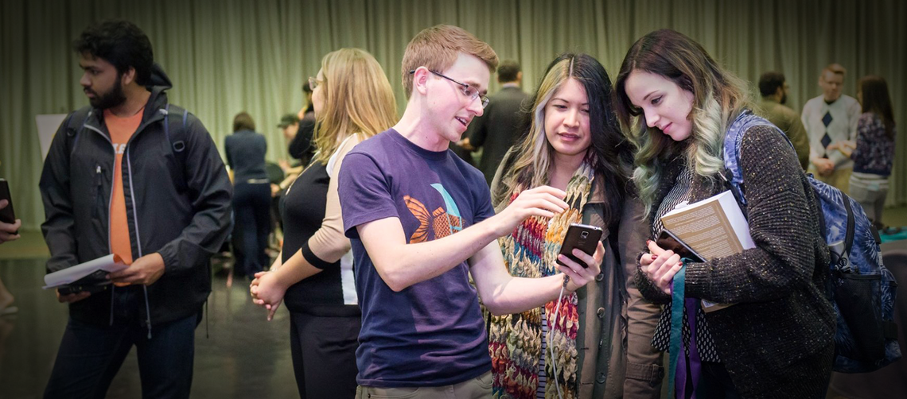

MANDYFLEXX UNIVERSITY
Computer Science Department.
YOUR PATHWAY TO BEST COMPUTER SCIENCE EDUCATION
Welcome to the Computer Science Department of Mandyflexx University. We offer a wide range of courses and have a dedicated faculty.Our mission: Advancing knowledge, fostering innovation, and shaping the future of technology
Life of students
Beyond the classroom and research labs, Our Departments enrich student life through extracurricular activities. Student organizations, hackathons, and coding clubs foster a sense of community, enabling students to collaborate, learn, and create outside the classroom. Our departments also facilitate internships and job placement, ensuring that graduates are well-prepared for the job market.Innovations.
- Startups and spin-offs.
- Patents and breakthroughs.
- Success stories from our alumni.

Community Engagement.
Our their role in the broader community. We organize tech talks, workshops, and seminars that are open to the public, sharing knowledge and fostering interest in technology. We also engage with local and global communities by offering outreach programs and supporting technology education initiatives.
-Outreach programs.
-Tech talks, workshops and seminars.
-Engagement with locals and global communities.